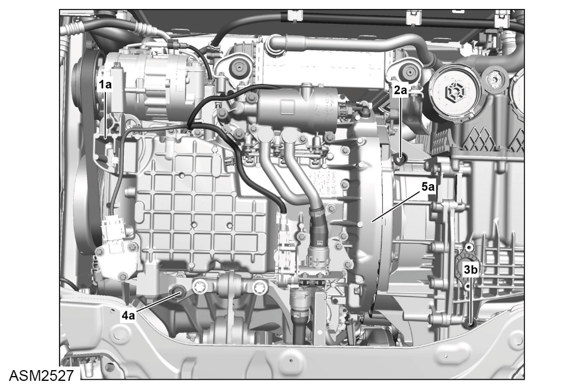
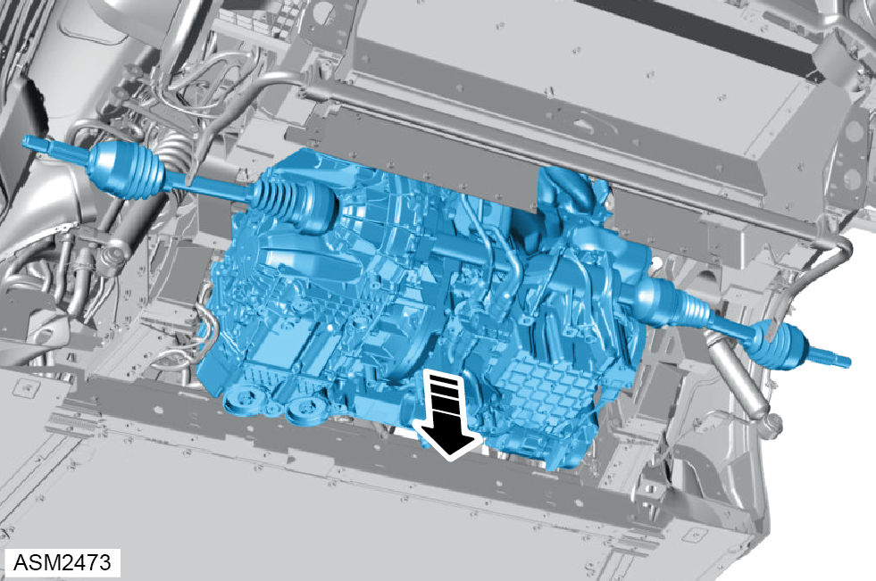

Engine Assembly - 4 Cylinder
Print
Operation Code: 40.00.01-01
Removal
- Remove left side seat. Refer to procedure.
- Move right side seat forward to aid future access.
- Disconnect 12v battery. Refer to procedure.
- Remove engine bay fan assembly. Refer to procedure.
- Remove exhaust pipe. Refer to procedure.
NOTE: When placing vehicle on 2 post ramp, make sure there is tool access to the lower control arm fixings.
- Remove rear left hub carrier. Refer to procedure.
- Remove rear right hub carrier.
- Remove rear undertray. Refer to procedure.
- Remove rear left wheel arch liner. Refer to procedure.
- Remove rear right wheel arch liner.
- Release harness from clip securing harness to lower control arm.
NOTE: Repeat step for right side.
- Release clips (x3) securing harness to lower subframe.
- Move harness aside.
- Loosen M12x100 bolt and nut securing lower control arm, until it clears the rear bulkhead. Torque 105 Nm.
NOTE: Repeat step for right side.
- Remove M12x50 bolts (x2) securing tie bar mount to carrier bracket. Torque 106 Nm.
- Remove M6x20 bolts (x11) securing lower subframe to upper crossmember panel. Torque 8 Nm.
NOTE: Not all fixings are shown in image.
- Remove M10x30 bolts (x2) securing lower subframe to bulkhead. Torque 45 Nm.
- Remove M10x30 bolts (x4) securing lower subframe to upper subframe. Torque 45 Nm.
NOTE: Repeat step for right side.
- Loosen, but do not fully remove M10x30 bolts (x2) securing lower subframe to upper subframe. Torque 45 Nm.
NOTE: Repeat step for right side.
- Using a suitable tool support lower subframe.
- Remove M10x30 bolts (x4) securing lower subframe to upper subframe.
- Remove lower subframe.
- Remove airbox assembly. Refer to procedure.
- Depressurise and evacuate AC system. Refer to procedure.
- Drain coolant. Refer to procedure.
- Disconnect harness connector.
- Disconnect harness connector and move harness aside.
- Remove cover from alternator harness.
- Remove M8 nut securing alternator harness from alternator. Torque 16 Nm.
- Remove alternator harness and move aside.
- Remove bolts (x2) securing AC hoses (x2) to compressor.
- Remove AC hoses (x2) and move aside.
NOTE: Plug hoses and compressor to prevent the ingress of dirt and foreign material.
- Disconnect coolant hoses (x2).
- Release clip securing hose to water pipe.
- Remove coolant hose from water pipe and move aside.
- Disconnect coolant hose from thermostat housing and move aside.
- Release clip securing hose to water pipe.
- Remove coolant hose from water pipe and move aside.
- Release clip securing hose to water pipe.
- Remove hose from water pipe and move aside.
- Disconnect hose from intercooler.
NOTE: Be prepared to catch any excess fluid.
- Remove M6x12 bolt securing bracket to charge intercooler. Torque 8 Nm.
- Disconnect harness connector from expansion tank.
- Release bleeder hose from expansion tank.
- Release clip securing hose to expansion tank.
- Remove hose from expansion tank.
NOTE: Be prepared to catch any excess fluid.
- Remove M6x16 bolt securing expansion tank to bracket.
- Lift tank in an upwards direction to release rear clip.
- Remove expansion tank.
- Disconnect hoses (x3) from 3 way diverter valve.
- Disconnect hoses (x2) and move aside.
- Release clip securing hose to expansion tank.
- Remove hose from expansion tank.
- Remove M6x16 bolt securing bracket to engine mount. Torque 10 Nm.
- Remove bracket from engine mount.
- Disconnect harness connector from transmission.
- Disconnect harness connector from starter motor.
- Remove cap covering starter motor connection.
- Remove M8 nut securing harness to starter motor. Torque 16 Nm.
- Remove harness from starter motor.
- Disconnect harness connector from engine bay temperature sensor.
- Remove coolant hoses (x3).
- Disconnect fuel line.
NOTE: Be prepared to catch any excess fluid.
- Remove washer bottle. Refer to procedure.
- Disconnect harness connector from turbocharger diverter valve.
- Release clip securing hose to diverter valve.
- Remove hose from diverter valve.
- Remove screws (x3) securing diverter valve to throttle body.
- Remove diverter valve.
- Install support fixture to lifting table and position under engine assembly.
- Insert mounts (6 and 7) with adaptors (8, 9, 10 and 12) to support fixture (5) as shown.

- Raise lifting table and align mounts so they are fully in contact with mounting points (1a, 2a, 3b, 4a and 5a) on engine assembly.
- Tighten screws (15) securing mounts to support fixture.
- Using a suitable tensioning strap, secure engine assembly to support fixture.
- Remove M12x50 bolts (x3) securing left side transmission mount to transmission. Torque 106 Nm.
- Release clips (x2) securing O2 sensor harness to engine mount.
- Remove M10x40 bolts (x4) securing right side engine mount to engine. Torque 45 Nm.

- Carefully lower engine assembly until it is clear of the vehicle.
 CAUTION: Be careful not to damage any components.
CAUTION: Be careful not to damage any components.
CAUTION: Always check engine assembly to vehicle clearances.
- Remove engine assembly.
Installation
- Installation is the reverse of removal procedure except for the following:
- Refill coolant.
- Recharge AC system.
- Renew all discarded seals.
- Renew all discarded cable ties.